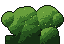
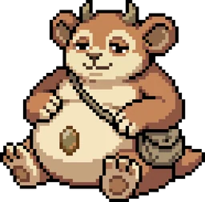
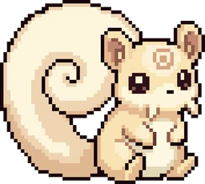
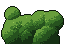
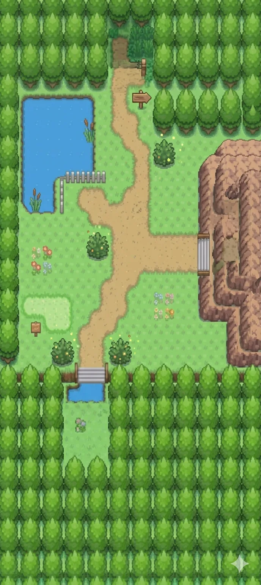
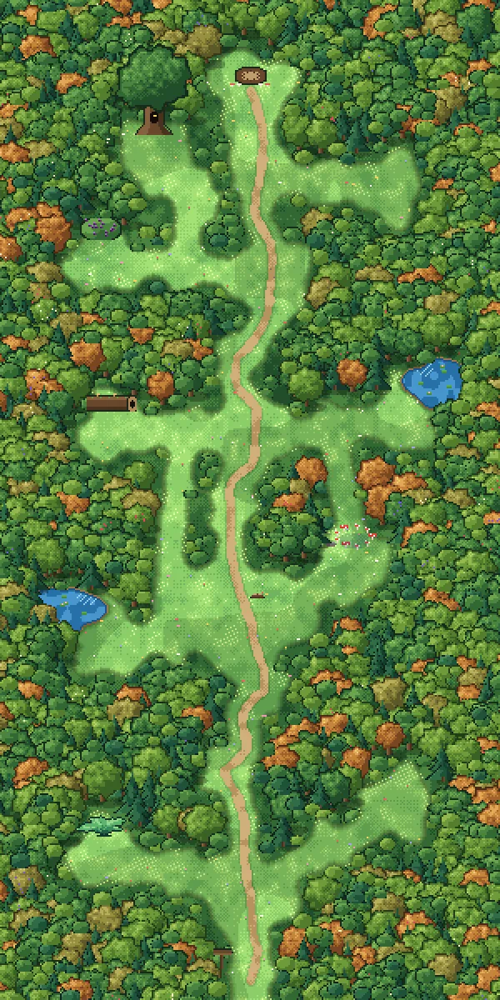
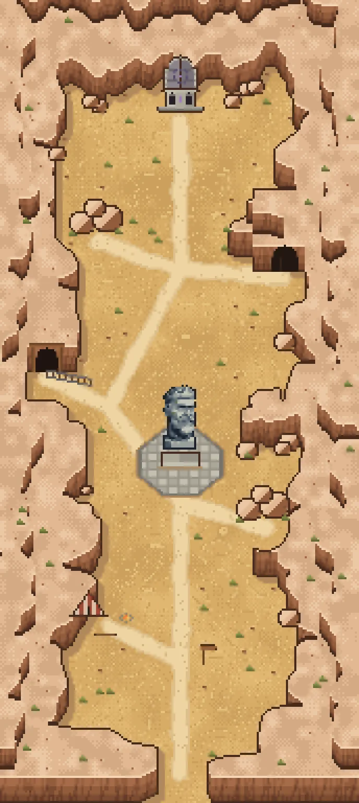
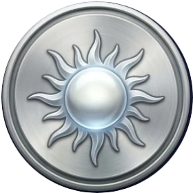
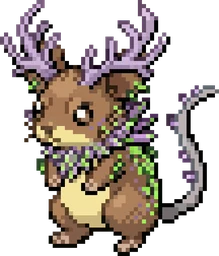

Zapiš jídlo
Makra a kalorie se počítají samy. Cíle se upravují podle tvého progresu.




Makroflow hlídá makra, kroky a tréninky. Za disciplínu dostaneš pixelový svět plný tvorů, úkolů a dovedností.
Aby mohl Makroflow ven pro všechny, Google chce 12 lidí, kteří mají aplikaci 14 dní nainstalovanou. Stačí si ji stáhnout a nechat v telefonu.
Stáhnout z Google Play ▶ play.google.com/store/apps/details?id=cz.uhk.macroflowMakra a kalorie se počítají samy. Cíle se upravují podle tvého progresu.
Kroky a tréninky dávají zkušenosti. Mapou se posuneš dál, jen když se hýbeš i v reálu.
Tvůj Makromon sílí, na správném levelu se promění a ty rozhodneš, jaký útok se naučí.



Ručně kreslení tvorové čekají v divočině. Další přibývají s každou aktualizací.
Úkoly, postavy a tajné lokace. Každý biom má vlastní příběh a strážce.

Odznaky za streaky, makra i pitný režim. Bronz, stříbro, zlato, diamant.

Kácení, lov i chytání hmyzu. Každý level dá bod do stromu dovedností.
Váha, spánek, únava a hlad. Naučíš se číst signály svého těla.
Stáhni si Makroflow a pomoz mi dostat ho na Google Play pro všechny.
Stáhnout z Google Play ▶